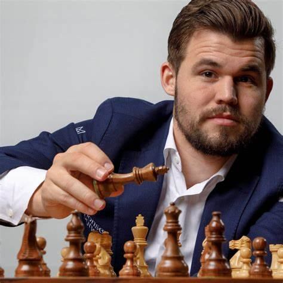
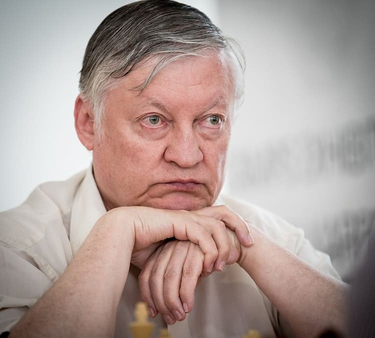

Czym sa szachy?
Rodzina strategicznych gier planszowych rozgrywanych przez dwóch graczy na 64-polowej szachownicy, za pomocą zestawu bierek. Popularnie, choć nieprecyzyjnie, szachami nazywa się również wspomniane bierki. Międzynarodowy Komitet Olimpijski uznaje szachy za dyscyplinę sportu.
Najlepsi gracze
- GM Magnus Carlsen
- GM Garri Kasparow
- GM Anatoly Karpov


Tytuły szachowe
- GM - Grand Master
- IM - International Master
- FM - Fide Master
- CM - Candidate Master